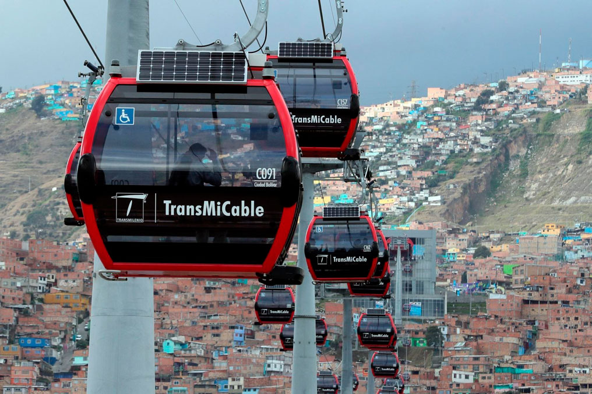

Uno de los principales referentes que tenemos es el teleférico Francés de Brest que tiene una capacidad máxima de transporte de 60 personas a un coste de energía cercano a 0. Esto gracias a un sistema que hace que una parte del teleférico reincorpore energía al sistema cuando va frenando y que la otra la gaste cuando va subiendo haciendo que el consumo sea muy bajo.
Otro de los referentes es el teleférico de la ciudad Bolívar en Colombia. Este transporta diariamente cerca de 20.000 personas, contribuye con el turismo en la zona y ayuda a los vecinos a desplazarse reduciendo el tiempo de movilización en al menos un 50%. Cuenta con 163 cabinas, cada una con capacidad para transportar a 10 personas sentadas, es decir, un total de 3600 de personas sentadas por hora.
